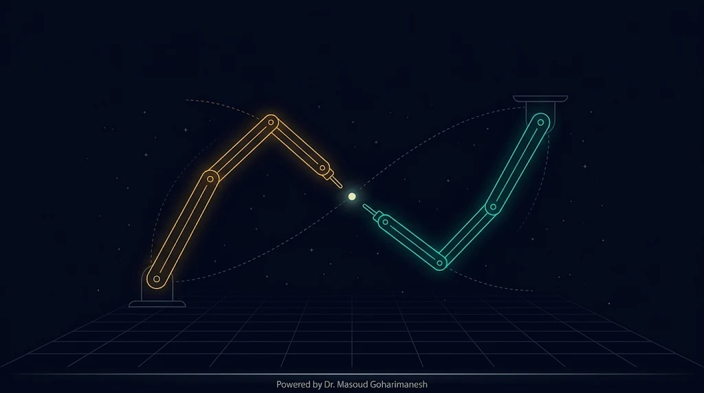
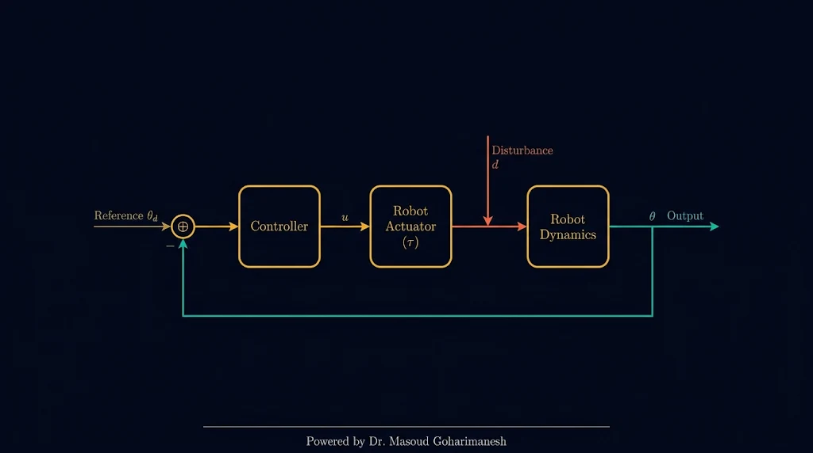

جلسه ۷ — سینماتیک معکوس جبری و مکانیزم چهارمیلهای
جلسه ۷ از ۱۶ — آغاز فاز ۳

سینماتیک معکوس ربات ۲R به شیوه جبری
از مسئله معکوس تا حل بسته: استخراج روابط تحلیلی، حل ابهام پیکربندیهای
Elbow-Up و Elbow-Down، و مقایسه با حل عددی fsolve در متلب.
چرا سینماتیک معکوس قلب کنترل ربات است؟
ربات برای رسیدن به نقطه هدف، باید زوایای مفاصل را بداند — نه برعکس
مستقیم (FK) — ساده و یکتا
ورودی: $\boldsymbol{\theta}$ → خروجی: موقعیت نوک. همیشه یک جواب دارد و محاسبه سریع است.
معکوس (IK) — غیرخطی و چندجوابه
ورودی: $(x, y)$ → خروجی: $\boldsymbol{\theta}$. ممکن است صفر، یک یا چند جواب داشته باشد.
کاربرد در عمل
تعقیب مسیر، جوشکاری، برداشتن قطعه — همیشه در قالب «برو به نقطه (x, y)» تعریف میشود.
نکته کلیدی: در بیشتر مسائل صنعتی، کاربر مختصات هدف را مشخص میکند و کنترلکننده باید در هر گام زمانی معادلات IK را حل کند — بنابراین IK بخش «گرانقیمت» محاسباتی است.
تعریف ریاضی مسئله برای ربات صفحهای ۲R
دنبال $\theta_1$ و $\theta_2$ هستیم بهگونهای که نوک بازو به $(x, y)$ برسد
نکته مهم: در مکانیزم چهارمیلهای، حل معکوس به اندازه حل مستقیم ساده است — این ویژگی خاص مکانیزمهای تکحلقهای است و در رباتهای چندحلقهای عمومی برقرار نیست.
چرا با وجود FK فرم بسته، باز هم کنترلکننده لازم است؟
سینماتیک فقط هندسه را میگوید؛ دینامیک و اغتشاشات را نه!

۱. دینامیک و اینرسی
FK میگوید «اگر $\boldsymbol{\theta}$ بود، نوک کجاست» — اما نمیگوید با چه گشتاوری به $\boldsymbol{\theta}$ برسیم. جرم، اصطکاک و کوریولیس باید با کنترلکننده جبران شوند.
۲. اغتشاشات خارجی
برخورد با مانع، تغییر بار، ارتعاش پایه — همه اینها خطا ایجاد میکنند. فقط حلقه بسته کنترل میتواند خطا را اصلاح کند.
۳. تأخیر و اشباع عملگر
موتور الکتریکی نمیتواند بینهایت سریع گشتاور بدهد. کنترلکننده باید محدودیتهای عملی را لحاظ کند.
۴. عدم قطعیت پارامترها
طول و جرم واقعی لینکها همیشه با مدل ریاضی مطابقت ندارد — کنترلکننده این اختلاف را جبران میکند.
کد MATLAB حل چهارمیلهای (FK و IK)
پیادهسازی روابط مختلط در یک اسکریپت فشرده
function th4 = fourbar_fk(th2, L1, L2, L3, L4) % سینماتیک مستقیم: th4 بر حسب th2
C = (L1^2 + L2^2 + L4^2 - L3^2 - 2*L1*L2*cos(th2)) / (2*L1*L4);
C = max(min(C,1),-1);
th4 = th2 + [1;-1]*acos(C); % دو حالت (Open / Crossed) end
function th2 = fourbar_ik(th4, L1, L2, L3, L4) % سینماتیک معکوس: th2 بر حسب th4
Cp = (L3^2 + L4^2 + L2^2 - L1^2 - 2*L3*L4*cos(th4)) / (2*L2*L3);
Cp = max(min(Cp,1),-1);
th2 = th4 + [1;-1]*acos(Cp); end
تمرینهای کلاسی جلسه هفتم
تمرینهای جبری، عددی، مکانیزم و پروژهای
الف) تمرین جبری
۱
برای $L_1 = 1.0$ و $L_2 = 0.8$، زوایای IK را برای نقاط $(0.5, 0.5)$ و $(1.2, 0.5)$ محاسبه کنید و صحت را با FK بسنجید.
۲
نشان دهید هنگام رسیدن به مرز دایره بزرگ ($r = L_1 + L_2$)، جواب Elbow-Up و Elbow-Down یکی میشوند — چرا؟
ب) تمرین عددی و کدنویسی
۱
تابع جبری ik_2R را در متلب/پایتون بنویسید و با fsolve برای ۱۰ نقطه مقایسه کنید.
۲
مکانیزم چهارمیلهای با $L_1=1, L_2=0.6, L_3=0.9, L_4=0.7$ را در متلب مدل کنید و $\theta_4$ را برای $\theta_2 \in [0, 2\pi]$ رسم کنید.
ج) تحلیل کنترلکننده
۱
چرا در رباتهای صنعتی، حتی با داشتن حل بسته IK، از کنترلکننده PID یا CTC استفاده میشود؟ (در ۵ خط توضیح دهید)
د) چالش پژوهشی ★
★
نمودار «پرش پیکربندی» را در مکانیزم چهارمیلهای رسم کنید: در طول یک دور کامل $\theta_2$، کجا جواب Open و Crossed جای یکدیگر را میگیرند و چه شرطی برای جلوگیری از این پرش وجود دارد؟
پرسش تعاملی جلسه ۷
سنجش درک شرایط وجود جواب IK
برای ربات ۲R با $L_1 = 1$ و $L_2 = 0.8$، هدف در $(2.0, 0.0)$ قرار دارد. نتیجه حل IK چیست؟
جمعبندی: تسلط بر IK جبری و مکانیزمهای بسته
اکنون میتوانید برای هر نقطه در فضای کاری، زوایای مفاصل را محاسبه کنید،
بین پیکربندیها آگاهانه انتخاب نمایید، حلقههای بسته چهارمیلهای را با اعداد مختلط حل کنید
و بفهمید چرا سینماتیک بهتنهایی برای کنترل کافی نیست.